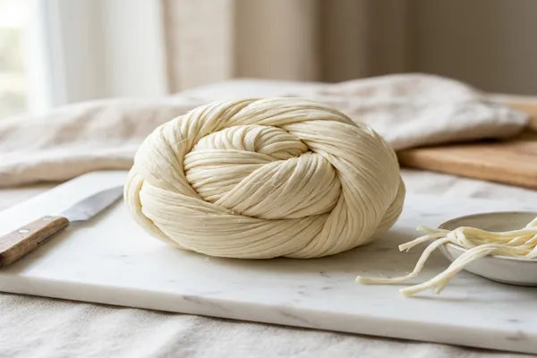
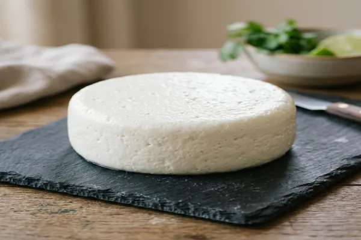
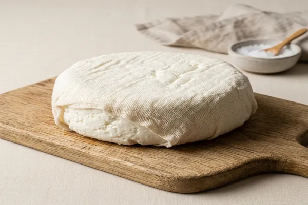
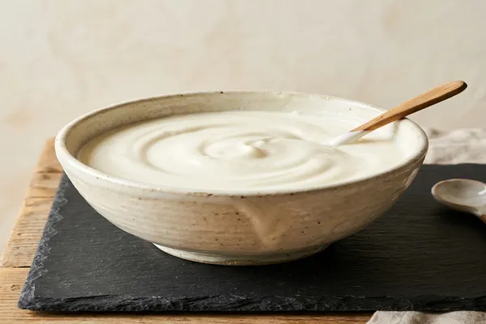
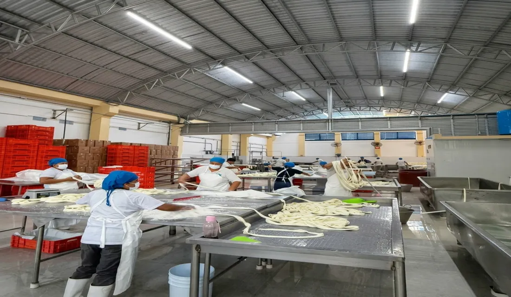

Quesillo de Crema
Pieza en bola de 6 kg. Pedido mínimo 1 caja (6 piezas = 36 kg). El más pedido por cremerías.
Ver detallesElaboramos quesillo, queso PVC, queso de tela, requesón y crema con recetas tradicionales heredadas desde Santa María del Tule. Abastecemos cremerías y tiendas de abarrotes en Chiapas y Oaxaca.
Elaboración artesanal con certificado sanitario. Todos nuestros productos requieren cadena de frío y se comercializan exclusivamente al mayoreo.
Pieza en bola de 6 kg. Pedido mínimo 1 caja (6 piezas = 36 kg). El más pedido por cremerías.
Ver detalles
Versión más ligera del quesillo tradicional. Misma presentación en bola y caja de 36 kg.
Ver detalles
Queso fresco molde aro PVC. Sabor tradicional oaxaqueño ideal para cremerías y abarrotes.
Ver detalles
Molde tradicional en tela. Firmeza ideal para el corte y presentación en mostrador.
Ver detalles
Bolsa de 25 kg. Elaborado directamente del suero caliente, textura suave y sabor fresco.
Ver detalles

Mantequilla artesanal con sabor tradicional. Disponible para pedidos mayoristas.
Ver detallesSomos una empresa familiar mexicana con más de tres décadas proveyendo al canal mayorista del sureste.
Fundada en 1993 por Martín Soto Bautista. Tres décadas perfeccionando recetas tradicionales oaxaqueñas.
Todos nuestros procesos cumplen con los estándares sanitarios requeridos para la industria láctea.
Atendemos únicamente canal mayorista: cremerías, tiendas de abarrotes y distribuidores del sureste.
Productos artesanales elaborados con métodos heredados desde Santa María del Tule, Oaxaca.
"Orgullo que se produce, calidad que trasciende."

En 1993, a los 24 años, Martín Soto Bautista fundó en Santa María del Tule, Oaxaca, un pequeño obrador que hoy se conoce como Lácteo Industria Soto S.A. de C.V. Lo que comenzó como Productos Lácteos Hermano Soto evolucionó en una empresa familiar con producción en Arriaga, Chiapas, que honra cada día las recetas heredadas de la tradición oaxaqueña.
A lo largo de 33 años hemos construido un negocio basado en el respeto por el producto, la consistencia en la calidad y la cercanía con nuestros clientes mayoristas. Cremerías y abarroterías de Chiapas y Oaxaca confían en nosotros para recibir siempre quesillo, queso PVC, queso de tela y requesón elaborados con el mismo cuidado artesanal de siempre.
Desde nuestra planta en Arriaga, Chiapas distribuimos a cremerías y abarrotes de ambos estados.
Base de operaciones en Arriaga. Cobertura directa para cremerías y abarrotes en todo el estado.
Origen histórico de la marca. Abastecemos a cremerías tradicionales del Valle Central y la región del Istmo.
Pedido mínimo mayoreo desde 1 caja (6 piezas = 36 kg de quesillo). Cotizamos según volumen y zona.